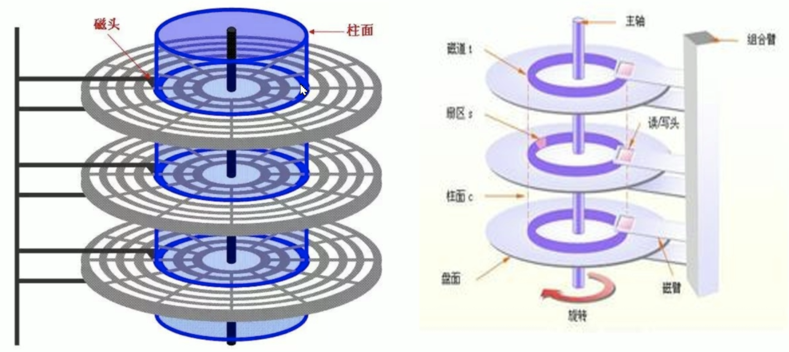
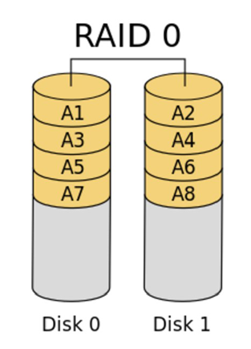
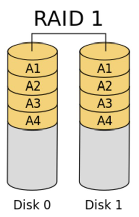
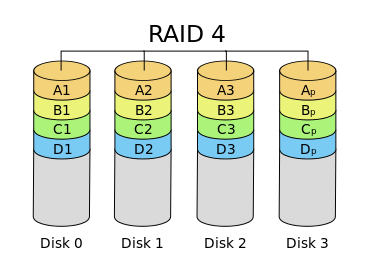
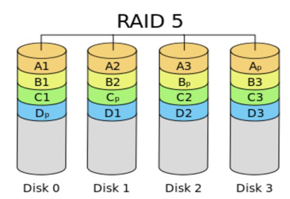
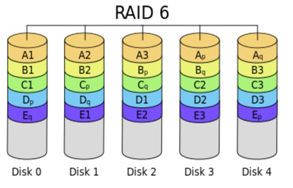
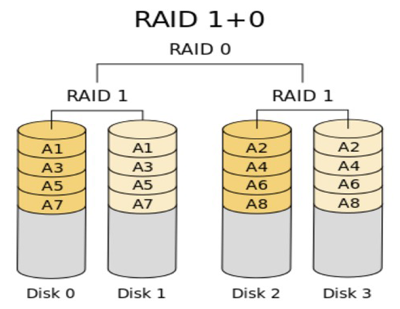
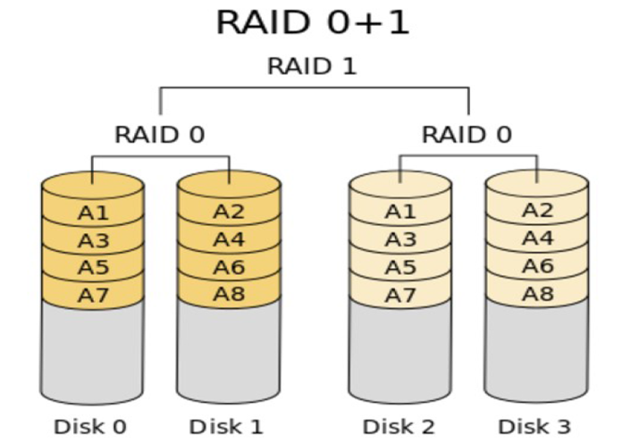
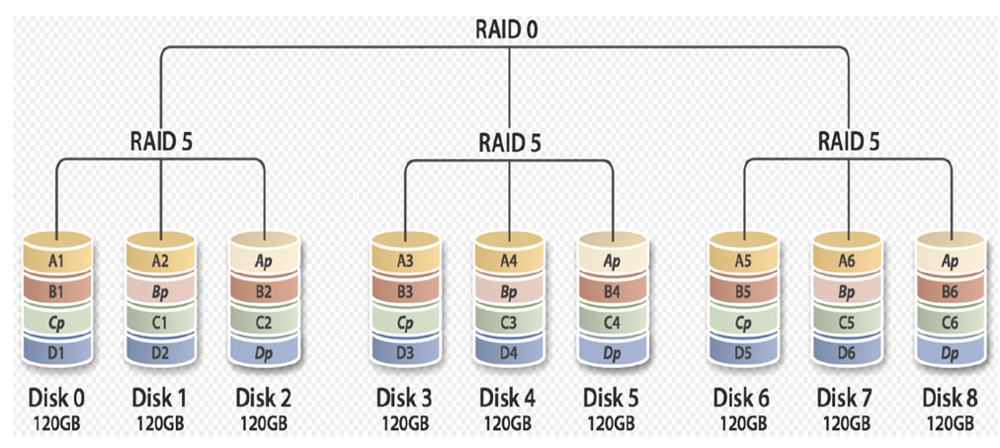
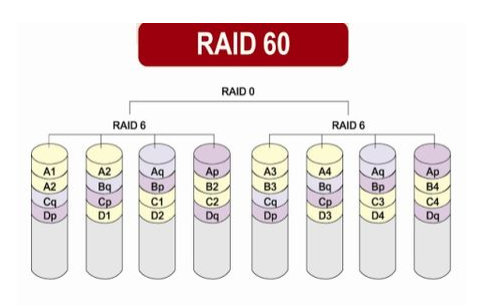

计算机组成原理
一、计算机硬件组成
计算机硬件的核心由五大部分组成
控制器：是计算机的指挥系统，负责控制所有其他硬件的运行
运算器：数学运算+逻辑运算
存储器：是计算机用来存放所有数据和程序的记忆部件。按指定的地址写入或者读取信息。
内存/主存 RAM：基于电信号来存储数据
优点：存取速度都快
缺点：没有办法持久存储，断电数据就全部丢失
外存：机械磁盘基于磁信号来存储数据
优点：可以持久保存数据
缺点：存储速度都慢
CMOS：与内存一样断电数据就丢，但特点是耗电量非常低，由主板上的电池负责供电
输入设备
- 键盘、鼠标
输出设备
- 显示器、音响、打印机
站在计算机硬件的角度：一个程序在计算机中是怎么运行起来的？
在运行程序之前：程序最先一定是先存放于硬盘中的（程序的安装本质也就是把一堆代码文件放到硬盘的各个位置）
程序开始运行分两个阶段
- 加载阶段/启动阶段：把程序的指令或数据从硬盘读入内存
- 执行阶段：cpu从内存中取出指令来运行
二、CPU
概念
中央处理器CPU由控制器 + 运算器组成，从内存中取指令->解码->执行，周而复始，直至整个程序被执行完成。所以CPU读取的数据都是从内存中来的
CPU读取的数据都是从主存储器（内存）来的！主存储器内的数据则是从输入单元所传输进来！而CPU处理完毕的数据也必须先写回主存储器中，最后数据才从主存储器传输到输出单元。
2核4线程 =》真2核假4核
4核 =》真4核
X86架构和64位
x86架构：是针对cpu的型号或者说架构的一种统称，指明cpu的指令集是复杂指令集
64位：表示cpu一次性能够从内存中取出多少位二进制数(bit)，64bit指的是一次性能从内存中取出64位二进制指令，64位的cpu可以运行64位、32位的程序；而32位的cpu只能运行32位的程序
CPU的两种工作状态：内核态和用户态
除了在嵌入式系统中的非常简答的CPU之外，多数CPU都有两种模式，即内核态与用户态。通常，PSW中有一个二进制位控制这两种模式。
内核态：
当cpu在内核态运行时，cpu可以执行指令集中所有的指令，很明显，所有的指令中包含了使用硬件的所有功能，（操作系统在内核态下运行，从而可以访问整个硬件）
用户态：
用户程序在用户态下运行，仅仅只能执行cpu整个指令集的一个子集，该子集中不包含操作硬件功能的部分，因此，一般情况下，在用户态中有关I/O和内存保护（操作系统占用的内存是受保护的，不能被别的程序占用），当然，在用户态下，将PSW中的模式设置成内核态也是禁止的。
内核态与用户态切换：
用户态下工作的软件不能操作硬件，但是我们的软件比如暴风影音，一定会有操作硬件的需求，比如从磁盘上读一个电影文件，那就必须经历从用户态切换到内核态的过程，为此，用户程序必须使用系统调用（system call），系统调用陷入内核并调用操作系统，TRAP指令把用户态切换成内核态，并启用操作系统从而获得服务。
为什么要区分用户态和内核态？
在CPU的所有指令中，有一些指令是非常危险的，如果错用，将导致整个系统崩溃。比如：清内存、设置时钟等。
所以，CPU将指令分为特权指令和非特权指令，对于那些危险的指令，只允许操作系统及其相关模块使用，普通的应用程序只能使用那些不会造成灾难的指令。
如此设计的本质意义是进行权限保护。 限定用户的程序不能乱搞操作系统，如果人人都可以任意读写任意地址空间软件管理便会乱套。
CPU的使用率和负载
CPU时间片：
我们现在所使用的Windows、Linux、Mac OS都是“多任务操作系统”，就是说他们可以“同时”运行多个程序，比如一边打开Chrome浏览器浏览网页还能一边听音乐。 但是，实际上一个CPU内核在同一时刻只能干一件事，那操作系统是如何实现“多任务”的呢？大概的方法是让多个进程轮流使用CPU一小段时间，由于这个“一小段时间”很短(在linux上为5ms-800ms之间)，用户感觉不到，就好像是几个程序同时在运行了。上面提到的“一小段时间”就是我们所说的CPU时间片，CPU的现代分时多任务操作系统对CPU都是分时间片使用的。
CPU利用率：
就是程序对CPU时间片的占用情况，即CPU使用率 = CPU时间片被程序使用的时间 / 总时间。比如A进程占用10ms，然后B进程占用30ms，然后空闲60ms，再又是A进程占10ms，B进程占30ms，空闲60ms，如果在一段时间内都是如此，那么这段时间内的CPU占用率为40%。CPU利用率显示的是程序在运行期间实时占用的CPU百分比。
CPU负载：
指的是一段时间内正在使用和等待使用CPU的任务数
简单理解，CPU利用率是CPU的实时使用情况，CPU负载是CPU的当前以及未来一段时间的使用情况。举例来说：如果我有一个程序它需要一直使用CPU的运算功能，那么此时CPU的使用率可能达到100%，但是CPU的工作负载则是趋近于“1”，因为CPU仅负责一个工作嘛！如果同时执行这样的程序两个呢？CPU的使用率还是100%，但是工作负载则变成2了。所以也就是说，CPU的工作负载越大，代表CPU必须要在不同的工作之间进行频繁的工作切换。无论CPU的利用率是高是低，跟后面有多少任务在排队(CPU负载)没有必然关系。
总结
load average平均负载（负载指的是几个活跃的活要干）：在一段时间内，处于R状态的进程数+不可中断D睡眠的进程数
- 平均负载是用来要衡量系统的繁忙程度
- cpu的使用率：反应的是cpu的使用情况
- 如果一个进程的cpu使用率为100%，说明占了一个cpu核心
- 如果为200%，说明占了两个cpu核心
4个cpu
- 平均负载为3，代有个3个活跃进程，—》低负载
- 平均负载为4，代有个4个活跃进程，—》满负载
- 平均负载>4， —》超负载
如果cpu利用率不高，但是平均负载高，说明不可中断睡眠的进程比较多，因为R状态进程一定会提高cpu的使用率，那么这时候就可以考虑进行IO的优化
如果cpu利用率高、平均负载也高，说明
- cpu密集型进程多
- 进程同时消耗cpu和进行I/O等待操作
- 进程竞争cpu资源
- 中断处理过多
- 大量短时进程，如短时间频繁创建/销毁进程
三、内存
概念
内存里存放的都是电信号，断电数据则丢失，相当于人脑失去记忆
cpu是从内存中取出指令来运行的，运行指令产生的数据也会放入内存中，所以内存又称之为主存，因为程序运行过程中产生的数据都是先存放于内存中
物理地址空间和虚拟地址空间
MMU：Memory Management Unit 负责虚拟地址转换为物理地址
程序在访问一个内存地址指向的内存时，CPU不是直接把这个地址送到内存总线上，而是被送到MMU（Memory Management Unit),然后把这个内存地址映射到实际的物理内存地址上，然后通过总线再去访问内存，程序操作的地址称为虚拟内存地址
TLB：Translation Lookaside Buffer 翻译后备缓冲区，用于保存虚拟地址和物理地址映射关系的缓存
扩展物理地址空间：插内存条按照奇数或偶数的插，不要按着1234的顺序插

物理内存与虚拟内存
每个进程在执行时都有自己的地址空间，这个地址空间其实就是 Linux 内核根据需要给进程分配的一个内存空间（区域）来作为当前进程的工作区，也称为进程的内存空间。这个地址空间包括了程序的指令、数据、堆栈、共享库和其他资源。操作系统负责分配和管理每个进程的地址空间，确保进程之间不会相互干扰。
当操作系统启动一个进程时，它会将进程的可执行文件加载到进程的地址空间中，使进程能够执行其中的指令。这包括将程序的代码段加载到内存中，为进程分配数据段和堆栈，以及加载所需的共享库等。尽管进程的地址空间通常是隔离的，但操作系统也允许进程之间共享内存区域，以便进行进程间通信（IPC）。这种共享可以通过共享内存、内存映射文件等机制来实现。
然而内存又涉及到两个概念，物理内存（Physical Memory）与虚拟内存（Virtual Memory）。所谓的物理内存就是计算机系统中实际存在的硬件内存，通常是 RAM（随机访问存储器）的形式。它是计算机用于存储和访问数据、指令和程序的物理硬件。在 Linux 系统中还有一个逻辑内存的概念，逻辑内存是为了满足物理内存不足而提出的策略，它是利用磁盘空间虚拟出的一块逻辑内存区域，被用作逻辑内存的这块磁盘空间我们称之为交换空间（Swap Space）。
但在 Linux 系统中，不管是物理内存还是逻辑内存，都会被映射为虚拟内存，这样的话，应用程序在使用内存时，就需要向 Linux 内核申请一个特定大小的内存映射，并且会收到其申请的虚拟内存的映射。因此，应用程序申请到的这个虚拟内存不一定是全部是物理内存的映射，还可能是逻辑内存的映射。然而，这种虚拟内存管理机制对用户和程序来说通常是不可见的（由底层自动实现），但我们还是需要理解 Linux 内存架构、地址布局等。
外翻：TLB(Translation Lookaside Buffer)传输后备缓冲器是一个内存管理单元用于改进虚拟地址到物理地址转换速度的缓存。TLB是一个小的，虚拟寻址的缓存，其中每一行都保存着一个由单个PTE组成的块。如果没有TLB，则每次取数据都需要两次访问内存，即查页表获得物理地址和取数据
虚拟内存是为了满足物理内存不足而提出的策略，通过将内存地址空间划分为固定大小的块（通常称为页或页帧），并在需要时将这些页面从磁盘交换到物理内存中来工作。这使得每个进程都有自己的独立地址空间，而不需要直接管理物理内存的分配。
虚拟内存机制可以使计算机可以运行大于物理内存的程序，方法是将正在使用的程序放入内存取执行，而暂时不需要执行的程序放到磁盘的某块地方，这块地方成为虚拟内存，在linux中成为swap，这种机制的核心在于快速地映射内存地址，整个过程计算机的速度被降低，但是保证不崩溃，由cpu中的一个部件负责，成为存储器管理单元
当运行某个大程序、大游戏，需要的内存超过空闲内存但小于物理内存总量时，会暂时把内存里这些数据放到磁盘上的虚拟内存里，空出物理内存运行游戏。等退出游戏后，又会把虚拟内存里的东西读出来，放回物理内存。所以，虚拟内存并不是用来虚拟物理内存的，而是暂存数据的。所以虚拟内存不是代替物理内存来运行程序的。
页高速缓存与页写回机制
在当今的计算机系统中，处理器的运行速度是非常快的，但 RAM 和磁盘并没有质的飞跃（尤其是磁盘读写速度），这就导致了系统整体性能并没有因为处理器速度的提升而提升。于是就使用到了缓存技术（其实就是内存缓存的技术），通过缓存机制解决了处理器和磁盘直接速度的不平衡。
页高速缓存通常以页面的单位来存储数据，因此被称为”页”高速缓存。页高速缓存是操作系统在物理内存中维护的一个缓存，用于存储磁盘上的文件数据的副本。Linux 系统中当一个文件的数据（内容）被读取时，操作系统将数据从磁盘读取到页高速缓存中，以便后续的读取操作可以直接去内存中读取数据，更快速地访问数据。
因此页高速缓存提高了文件的读取性能，因为它允许频繁访问的数据保留在快速的内存中，而不是每次都从慢速的磁盘中读取。
页写回机制是一种优化技术，用于减少文件写入操作对性能的影响，提高磁盘I/O的性能。当文件数据被修改并需要写回磁盘时，操作系统通常不会立即将数据写回磁盘，而是将数据标记为”脏”，并将其保留在页高速缓存中。操作系统通过一种策略，例如延迟写回或按需写回，决定何时将脏数据写回磁盘。这允许操作系统将多个写操作合并，以减少磁盘写入的次数，提高性能。
页写回机制可以防止频繁的磁盘写入操作对系统性能造成明显的影响，因为它允许系统在更高效的时间进行磁盘写入，而不是在每个写操作之后立即进行。
Swap Space
Swap Space（交换空间）是 Linux 中虚拟内存的一个实现方式，除了填补因物理内存不足的空缺外，还将会在适当的时候将物理内存中不经常读写的数据块自动交换到 Swap 交换空间（这个交换的操作是由 Linux 内核来执行的），从而侧面将经常读写的数据保留在了物理内存。
说白了就是，它为什么叫交换空间，就是要实现数据的交换（将不常用数据交换到作为逻辑内存的磁盘空间，而保留常用数据在真正的物理内存空间中）。这个交换的策略由 Linux 系统内核定时执行，目的就是为了保持尽可能多的空闲物理内存。
那什么叫做在适当的时候会进行数据交换，我们所说的适当时间其实是 Linux 内核根据“最近最经常使用”算法（LRU 算法），定时地将一些不经常使用的页面文件（其实就是文件数据，因为内存是以页面存储数据的）交换到 Swap。
有时候会发现：Linux 物理内存还有很多，而 Swap 的数据占用却很大，这是什么原因呢？其实这是正常现象。如果一个内存占用很大的进程正在运行，必然就会耗费大量的内存资源，此时 Linux 内核就会将一些不常用的页面文件交换到 Swap Space 中。当该进程终止后，Linux 就会释放该进程占用的大量内存资源，而此时被交换出去的页面文件数据并不会自动又交换到物理内存中来（除非有这个必要），那此时看到的就是物理内存空间空闲，Swap Space 占用较大的现象了。
页面缺失和页面调度
程序要读虚拟内存中的某个页面数据时，而恰好这个页面数据位于 Swap Space 中。那此时的流程就是：交换空间（Swap Space）中的数据在被读取时通常会首先被交换到物理内存，然后才能被程序访问。
页面缺失（Page Fault）：当程序尝试访问一个在物理内存中不存在的内存页时，会触发一个页面缺失。这可能是因为该页已经被交换到了交换空间中，或者是因为程序首次访问该页。在任何情况下，操作系统会注意到页面缺失。
页面调度（Page Scheduling）：操作系统负责页面调度，决定哪些页面从交换空间加载到物理内存中以满足程序的需求。通常，操作系统会使用一种页面替换算法（例如LRU - 最近最少使用）来选择哪些页从交换空间中加载，以便最大限度地减少性能开销。一旦数据加载到物理内存中，操作系统会更新进程的页表，以指示这些页面现在位于物理内存中，程序可以访问它们。页表是一个数据结构，用于映射虚拟地址到物理地址。
进程使用内存问题
内存泄漏：Memory Leak
指程序中用malloc或new申请了一块内存，但是没有用free或delete将内存释放，导致这块内存一直处于占用状态
内存溢出：Memory Overflow
指程序申请了10M的空间，但是在这个空间写入10M以上字节的数据，就是溢出,类似红杏出墙，比如10M的空间，我存放20M的数据，那么就会有10M存放到别的内存空间，而别的内存空间是由其他用户运行的，如果那个20M的数据是恶意代码，就会破坏其他用户的内存空间
内存不足：OOM
OOM 即 Out Of Memory，“内存用完了”，这情况在java程序中比较常见。系统会选一个进程将之杀死，在日志messages中看到类似下面的提示
Jul 10 10:20:30 kernel: Out of memory: Kill process 9527 (java) score 88 or sacrifice child
当 JVM 因为没有足够的内存来为对象分配空间并且垃圾回收器也已经没有空间可回收时，就会抛出这个error，因为这个问题已经严重到不足以被应用处理。
原因：
- 给应用分配内存太少：比如虚拟机本身可使用的内存（一般通过启动时的VM参数指定）太少。
- 应用用的太多，并且用完没释放，浪费了。此时就会造成内存泄露或者内存溢出。
使用的解决办法：
- 限制 java进程的max heap，并且降低 java程序的worker数量，从而降低内存使用
- 给系统增加swap空间
Linux中可以设置内核参数
大页内存
四、硬盘
概念
磁盘里存放的是磁信号，固态硬盘里存放的电子，断电数据都不会丢失，相当于人把事物记录到本子上，肯定不会忘记了。程序运行过程中产生的数据一定是先存放于内存中的，若想永久保存，必须由内存刷如硬盘。硬盘上也有缓存芯片
磁盘上是一连串的2进制位（称为bit位），为了统计方法，8个bit称为一个字节bytes，1024bytes=1k，1024k=1M，1024M=1G,所以我们平时所说的磁盘容量最终指的就是磁盘能写多少个2进制位。
1 | 1B= 8bit |
虽然计算机上存放的都是一个个的bit位，但是计算机存取硬盘的单位都是一个扇区，一个扇区512个字节。数据都存放于一段一段的扇区，从磁盘读取一段数据需要经历寻道时间和延迟时间
- 平均寻道时间： 机械手臂上的磁头找到存储数据的那一圈磁道所花费的时间
- 平均延迟时间： 磁盘转半圈的速度
站在硬盘的角度最小读写单位是一个扇区；站在操作系统的角度最小的读写单位一个block块（默认是由8个扇区）
磁盘类型
硬盘接口类型
- IDE：133MB/s，并行接口，早期家用电脑
- SCSI：640MB/s，并行接口，早期服务器
- SCSI 是常用且重要的数据传输协议之一，它支撑着操作系统对外部设备的i/o操作。实际应用场景中，在linux系统上添加一个新的 scsi 磁盘是不需要重启的，一般可以通过扫描发现的操作来识别就绪设备
- SATA：6Gbps，SATA数据端口与电源端口是分开的，即需要两条线，一条数据线，一条电源线
- SAS：6Gbps，SAS是一整条线，数据端口与电源端口是一体化的，SAS中是包含供电线的，而SATA中不包含供电线。SATA标准其实是SAS标准的一个子集，二者可兼容，SATA硬盘可以插入SAS主板上，反之不行
- USB：480MB/s
- M.2：
注意：速度不是由单纯的接口类型决定，支持Nvme协议硬盘速度是最快的
服务器硬盘大小
- LFF：3.5寸，一般见到的那种台式机硬盘的大小
- SFF：Small Form Factor 小形状因数，2.5寸，注意不同于2.5寸的笔记本硬盘
L、S分别是大、小的意思，目前服务器或者盘柜采用sff规格的硬盘主要是考内虑增大单位密度内的磁盘容量、增强散热、减小功耗
机械硬盘和固态硬盘
机械硬盘（HDD）：Hard Disk Drive，即是传统普通硬盘，主要由：盘片，磁头，盘片转轴及控制电机，磁头控制器，数据转换器，接口，缓存等几个部分组成。机械硬盘中所有的盘片都装在一个旋转轴上，每张盘片之间是平行的，在每个盘片的存储面上有一个磁头，磁头与盘片之间的距离比头发丝的直径还小，所有的磁头联在一个磁头控制器上，由磁头控制器负责各个磁头的运动。磁头可沿盘片的半径
方向运动，加上盘片每分钟几千转的高速旋转，磁头就可以定位在盘片的指定位置上进行数据的读写操作。数据通过磁头由电磁流来改变极性方式被电磁流写到磁盘上，也可以通过相反方式读取。硬盘为精密设备，进入硬盘的空气必须过滤
固态硬盘（SSD）：Solid State Drive，用固态电子存储芯片阵列而制成的硬盘，由控制单元和存储单元（FLASH芯片、DRAM芯片）组成。固态硬盘在接口的规范和定义、功能及使用方法上与普通硬盘的完全相同，在产品外形和尺寸上也与普通硬盘一致
相较于HDD，SSD在防震抗摔、传输速率、功耗、重量、噪音上有明显优势，SSD传输速率性能是HDD的2倍
相较于SSD，HDD在价格、容量占有绝对优势
硬盘有价，数据无价，目前SSD不能完全取代HHD
硬盘存储方式
在计算机存储系统中，硬盘是主要的数据存储设备之一，数据被存储在硬盘的表面上，而硬盘表面被划分为许多扇区，每个扇区都是数据存储和访问的最小单位。但实际中操作系统读取硬盘的时候，不会一个个扇区地读取，这样效率太低，而是一次性连续读取多个扇区，即一次性读取一个”块”（block）。这种由多个扇区组成的”块”，是文件存取的最小单位。”块”的大小，最常见的是 4KB，即连续八个 sector 组成一个 block。以下是磁盘和扇区之间的关系的要点

硬盘存储术语 CHS
- 硬盘驱动器：硬盘驱动器是计算机中的存储设备，它包含一个或多个磁盘盘片。这些盘片上有一个或多个磁性涂层，用于存储数据。
- 磁头head：一个盘面对应一个磁头，磁头数=盘面数，硬盘驱动器上有多个读/写头，它们位于磁盘的顶部和底部，用于读取和写入数据。磁头可以移动到不同的磁道上，以读取或写入数据。
- 磁道track：盘面上的每一圈就是一个磁道，磁道=柱面数。磁盘表面被划分为一个个同心圆环，每个环被称为一个磁道（track）。数据通常存储在这些磁道上。
- 扇区sector：把每个磁道按512bytes大小再进行划分，这就是扇区，每个磁道上的扇区数量是不一样的。每个磁道被分为若干个扇区（sector），扇区是存储数据的最小物理单位。通常，每个扇区的大小为512字节或4K字节。
- 柱面cylinder：磁头移动的时候，是一起移动的，如果是6个盘面，则6个磁头对应的磁道是一致的，这就是柱面，柱面 1柱面=512 * sector数/trackhead数=51263*255=7.84M。柱面（cylinder）是垂直堆叠在多个盘片上的同心圆磁道的集合。在磁盘驱动器上，读/写头可以同时访问相同柱面上的多个磁道。
数据在磁盘上的存储和检索过程通常涉及到读/写头移动到正确的柱面和磁道上，然后在相应的扇区上进行数据传输。操作系统和文件系统管理这些硬件细节，以便应用程序可以读取和写入文件，而无需关心底层硬件的物理结构。
在Linux系统中，CentOS 5 之前版本 Linux 以柱面的整数倍划分分区，CentOS 6之后可以支持以扇区划分分区，CentOS7之后，就只显示扇区信息了
磁盘上寻址的两种方式
CHS
- CHS采用 24 bit位寻址
- 其中前10位表示cylinder，中间8位表示head，后面6位表示sector
- 最大寻址空间 8 GB
LBA
- LBA是一个整数，通过转换成 CHS 格式完成磁盘具体寻址
- ATA-1规范中定义了28位寻址模式，以每扇区512位组来计算，ATA-1所定义的28位LBA上限达到128 GiB。2002年ATA-6规范采用48位LBA，同样以每扇区512位组计算容量上限可达128Petabytes
由于CHS寻址方式的寻址空间在大概8GB以内，所以在磁盘容量小于大概8GB时，可以使用CHS寻址方式或是LBA寻址方式；在磁盘容量大于大概8GB时，则只能使用LBA寻址方式
文件的 I/O 模式
Buffer I/O (标准 I/O)
- 原理：数据先写入内核的缓冲区（页面缓存），内核异步将缓冲区的脏数据写入磁盘。
- 优点：
- 读操作：大多数情况下直接从 RAM 缓存读取数据，速度快。
- 写操作：页面缓存减少磁盘 I/O 次数，提高写性能。
- 缺点：
- 可能存在数据丢失风险，如系统崩溃或断电。
- 缓存溢出可能导致性能问题。
- 适用场景：适合大多数场景，尤其是读操作较多的应用。
Direct I/O (直接 I/O)
- 原理：数据直接写入磁盘，绕过页面缓存。
- 优点：避免缓冲区数据丢失的风险。
- 缺点：性能较低，因为每次写操作都需要直接与磁盘交互。
- 适用场景：适合对数据安全性要求较高的应用，如数据库系统。
磁盘 I/O 调度策略
在 Linux 中，磁盘 I/O 调度策略用于决定磁盘上的 I/O 请求的执行顺序，以最大程度地提高系统性能和吞吐量。不同的磁盘 I/O 调度策略采用不同的算法来管理 I/O 请求队列。以下是一些常见的Linux磁盘I/O调度策略：
CFQ（Completely Fair Queuing）
CFQ 调度器旨在提供公平性，确保每个进程都能公平地访问磁盘。它为每个进程维护一个 I/O 请求队列，并使用时间片轮转的方式为各个队列提供服务。在 Linux 2.6 内核上默认采用的就是该调度策略。
Deadline
Deadline 调度器着重于 I/O 请求的响应时间。它将 I/O 请求分为两类：读取请求和写入请求，然后按照截止时间来排序。读取请求通常具有较短的截止时间，以减少读取延迟，而写入请求通常具有较长的截止时间，以优化写入性能。其核心就是在于保证每个 I/O 请求在一定时间内一定要被服务到，避免某个请求饥饿。在 Linux 3.x 内核上默认采用的就是该调度策略。
NOOP
NOOP 调度器是一个简单的 FIFO（先进先出）队列，不执行任何排序或优化。它通常用于高性能存储设备，如固态硬盘（SSD），因为这些设备通常具有较低的访问延迟。
BFQ（Budget Fair Queueing）
BFQ 调度器旨在提供更好的磁盘 I/O 吞吐量和响应时间。它采用基于权重的算法，为每个进程分配预算，然后根据预算来调度I/O请求。BFQ 适用于需要更好响应时间的多任务工作负载。
Kyber
Kyber 调度器是一个新的 I/O 调度器，旨在兼顾低延迟和高吞吐量。它使用一种称为 Kyber Deadline 的方式来管理 I/O 请求，尽量减少延迟并提高性能。
MQ-DEADLINE
MQ-DEADLINE 是一种多队列版本的 Deadline 调度器，它在多核系统中更有效地管理 I/O 请求队列。
如何查看 Linux 的磁盘 I/O 调度策略？
1 | [root@rocky8 ~]#cat /sys/block/sda/queue/scheduler |
page cache
脏数据 (Dirty Pages)
- 定义：缓冲区中未被写入磁盘的数据，称为脏数据。
- 作用：提高写性能，减少磁盘 I/O 次数。
脏数据落盘机制
- 落盘工具：Linux 内核中的 kworker/flush 线程负责将脏数据写入磁盘。
- 落盘时机：
- 当脏数据比例超过
vm.dirty_background_ratio时，开始异步写入。 - 当脏数据比例超过
vm.dirty_ratio时，同步阻塞写入。 - 脏数据存活时间超过
vm.dirty_expire_centisecs时，会强制落盘。 - 内核定期 (
vm_dirty_writeback_centisecs时间间隔) 唤醒 flush 线程处理脏数据。
- 当脏数据比例超过
衡量硬盘性能的常见指标
IOPS（每秒 I/O 操作次数）
- 定义：每秒磁盘完成的读或写操作次数。
- 计算公式：IOPS = 1000 ms / (寻道时间 + 旋转延迟)。
BPS（每秒 I/O 流量）
- 定义：一秒内磁盘写入和读出的数据总量，单位为 MB/s。
- 计算公式：BPS = IOPS × 数据块大小
IO 操作的基本单位
- 扇区：硬盘的最小读写单位，默认大小为 512Bytes。
1 | ~# fdisk -l |
- 块：操作系统的最小读写单位，通常指文件系统的逻辑块。(4096Bytes)
1 | ~# stat /dev/sda3 |
实际读写硬盘涉及的因素
在实际读写硬盘的过程中，性能和行为会受到多个因素的影响，包括应用程序、操作系统和硬盘本身的特性。
应用程序
并发任务数
- 定义：应用程序同时发起的 I/O 请求数量。
- 影响：
- 并发任务数越高，磁盘的负载越大。
- 如果并发任务数超过磁盘的最大 IOPS 能力，会导致性能下降，甚至出现 I/O 队列积压。
提交方式
同步提交
定义：应用程序提交一个 I/O 请求后，会等待该请求完成后再提交下一个请求。
影响：
适合顺序读写操作。
性能较低，因为每次 I/O 操作都需要等待完成。
异步提交
定义：应用程序提交一个 I/O 请求后，不需要等待该请求完成，可以直接提交下一个请求。
影响：
适合高并发场景。
性能较高，因为可以充分利用磁盘的并行处理能力。
操作系统
调度算法：操作系统使用的调度算法会影响 I/O 请求的处理顺序和效率。
缓存机制：操作系统中的缓存机制（如 page cache）可以提高读写性能，但也可能导致数据一致性问题。
文件系统：不同的文件系统（如 ext4、xfs 等）有不同的性能特性和优化策略。
文件 IO 模式：选择合适的 IO 模式可以平衡性能和数据安全性。
硬盘本身
类型：不同类型的硬盘（如 HDD、SSD）有不同的性能特点。HDD 通常具有较高的寻道时间和旋转延迟，而 SSD 则具有较低的延迟和更高的 IOPS。
容量：硬盘的容量大小也会影响其性能。大容量硬盘可能需要更长的时间来寻道和旋转。
接口：硬盘接口（如 SATA、SAS、NVMe）也会影响其传输速率和延迟。
磁盘访问方式
随机访问
定义：每次 I/O 操作访问的逻辑块地址不连续。
影响：
性能较低，因为每次访问都需要经历平均延迟和平均寻道时间。
适合需要频繁随机读写的应用，如数据库查询。
顺序访问
定义：每次 I/O 操作访问的逻辑块地址连续。
影响：
性能较高，因为只需要经历一次平均延迟和平均寻道时间，后续的块可以连续读取。
适合需要大量顺序读写的应用，如文件传输。
RAID
硬盘分区痛点：一个硬盘损坏，其下所有分区全坏，解决需要用到RAID技术，优化磁盘文件系统
独立硬盘冗余阵列，旧称廉价磁盘冗余阵列，简称磁盘阵列。利用虚拟化存储技术把多个硬盘组合起来，成为一个或多个硬盘阵列组，目的为提升性能或数据冗余，或是两者同时提升。
RAID存储通过将数据重复或重新创建，并将其存储在附加的驱动器上来防止磁盘驱动器数据的完全丢失，这个过程也被称为数据冗余。
提供数据丢失保护的配置被称为“容错”配置，这意味着即使磁盘驱动器发生故障，阵列仍然可以成功运行并提供可恢复的数据。
磁盘冗余阵列（RAID）是一种用于提高数据存储可靠性和性能的技术。RAID 将多个硬盘驱动器组合在一起，以创建一个单一的逻辑存储单元，数据会分散存储在这些驱动器上，不同的 RAID 级别提供不同级别的冗余和性能。
RAID 层级不同，数据会以多种模式分散于各个硬盘，RAID 层级的命名会以 RAID 开头并带数字，例如：RAID 0、RAID 1、RAID 5、RAID 6、RAID 7、RAID 01、RAID 10、RAID 50、RAID 60。每种等级都有其理论上的优缺点，不同的等级在两个目标间获取平衡，分别是增加数据可靠性以及增加存储器（群）读写性能。
简单来说，RAID把多个硬盘组合成为一个逻辑硬盘，因此，操作系统只会把它当作一个实体硬盘。RAID常被用在服务器电脑上，并且常使用完全相同的硬盘作为组合。由于硬盘价格的不断下降与RAID功能更加有效地与主板集成，它也成为普通用户的一个选择，特别是需要大容量存储空间的工作，如：视频与音频制作。
条带化阵列是一种将数据分割并跨多个磁盘存储的技术，用以提高数据的读写性能。条带化（Striping）是RAID（Redundant Array of Independent Disks，独立磁盘冗余阵列）技术中的一种，它通过将连续的数据分割成相同大小的数据块，并将这些数据块分别写入到阵列中的不同磁盘上的方法来操作。条带化的主要目的是实现I/O（输入/输出）负载均衡和提高数据传输速度
RAID功能实现
- 提高IO能力,磁盘并行读写
- 提高耐用性,磁盘冗余算法来实现
RAID实现的方式
- 外接式磁盘阵列：通过扩展卡提供适配能力
- 内接式RAID：主板集成RAID控制器，安装OS前在BIOS里配置
- 软件RAID：通过OS实现，比如：群晖的NAS
RAID-0
RAID 0 也称为条带化（striping）阵列，它将数据块分成多个条带并将这些条带分散存储在多个硬盘上。RAID 0 提供了更高的性能，因为数据可以并行读取和写入多个驱动器。然而，RAID 0 没有冗余，如果一个驱动器故障，所有数据都会丢失。因此，如果你的程序读写数据频繁、且对数据安全性一般的话，就可采用 RAID 0
以 chunk 单位（大小可以指定）读写数据，因为读写时可以并行处理，所以在所有的级别中，RAID 0的速度是最快的。但是RAID 0既没有冗余功能，也不具备容错能力，如果一个磁盘（物理）损坏，所有数据都会丢失
每块硬盘的大小要一样，不管多少块硬盘，Linux上会认为是一个硬盘(/dev/sda)；比如现在有100M的文件，chunk=64K，那么100M的文件就会分成若干个64K，第一个chunk放在A1，第二个放在A2…..均匀存放（n块硬盘，各有1/n）
读、写性能提升
可用空间：N*min(S1,S2,…)
无容错能力
最少磁盘数：1+

RAID-1
RAID 1 是镜像（mirroring）阵列，它将相同的数据复制到两个或更多硬盘上。因此 RAID 1 提供了数据冗余，如果一个驱动器故障，数据仍然可用。RAID 1 通常用于重要数据的备份。RAID 1 需要至少两个硬盘驱动器。
也称为镜像, 两组以上的N个磁盘相互作镜像，在一些多线程操作系统中能有很好的读取速度，理论上读取速度等于硬盘数量的倍数，与
RAID-0相同。另外写入速度有微小的降低，但解决了硬盘损坏时出现的问题
读性能提升、写性能略有下降
可用空间：1*min(S1,S2,…)
磁盘利用率 50%（因为两块硬盘一块是存放数据，一块是备份数据）
有冗余能力（可防止磁盘损坏带来的数据丢失，防止不了人为的删除，因为两边是同时操作的，不能代替传统的备份）
最少磁盘数：2+

RAID-4
100M的文件，chunk=64K，第一个放在A1，第二个放在A2，第三个放在A3，然后A1+A2+A3=Ap（校验位），以此类推，好处就是假如其中一个硬盘坏了，可以通过校验位找回来（不能坏两块以上），但是万一放校验位的硬盘坏了，就都没有了，所以RAID-5解决这个问题
多块数据盘异或运算值存于专用校验盘（校验位都在一个硬盘）
磁盘利用率 (N-1)/N
有冗余能力
至少3块硬盘才可以实现

RAID-5
RAID 5 使用条带化和奇偶校验来提供数据冗余和性能。数据被分成多个条带，并且奇偶校验信息分布在不同的驱动器上。如果一个驱动器故障，可以通过奇偶校验信息恢复数据。RAID 5 需要至少三个硬盘驱动器。
每个硬盘都有校验位
读、写性能提升
可用空间：(N-1)*min(S1,S2,…)
有容错能力：允许最多1块磁盘损坏
最少磁盘数：3, 3+

RAID-6
RAID 6 类似于 RAID 5，但提供更高级别的冗余。它使用两组奇偶校验信息来保护数据，因此可以容忍两个驱动器的故障。RAID 6 需要至少四个硬盘驱动器。
双份校验位,算法更复杂
读、写性能提升
可用空间：(N-2)*min(S1,S2,…)
有容错能力：允许最多2块磁盘损坏
最少磁盘数：4, 4+

RAID-10
RAID 10 是RAID 1+0 的组合，它将数据复制到多个驱动器上，并使用条带化提供更高的性能。RAID 10提供了很高的性能和冗余，但需要至少四个硬盘驱动器。
读、写性能提升
可用空间：N*min(S1,S2,…)/2
有容错能力：每组镜像最多只能坏一块
最少磁盘数：4, 4+
容错性失败几率1/3

RAID-01
多块磁盘先实现RAID0,再组合成RAID1
容错性失败几率2/3

RAID-50
多块磁盘先实现RAID5,再组合成RAID0

RAID-60
安全性高，提升数据安全

RAID 总结
| RAID等级 | 最少硬盘 | 最大容错 | 可用容量 | 读取性能 | 写入性能 | 安全性 | 目的 | 应用场景 |
|---|---|---|---|---|---|---|---|---|
| 0 | 1 | 0 | n | n | n | 一个硬盘异常，全部硬盘都会异常 | 追求最大容量、速度 | 影片剪接，缓存用途 |
| 1 | 2 | n-1 | 1 | n | 1 | 高，一个正常即可 | 追求最大安全性 | 个人、企业备份 |
| 5 | 3 | 1 | n-1 | n-1 | n-1 | 高 | 追求最大容量、最小预算 | 个人、企业备份 |
| 6 | 4 | 2 | n-2 | n-2 | n-2 | 安全性较RAID5高 | 同RAID 5，但较安全 | 个人、企业备份 |
| 10 | 4 | 高 | 综合RAID 0/1优点，理论速度较快 | 大型数据库、服务器 | ||||
| 50 | 6 | 高 | 提升数据安全 | |||||
| 60 | 8 | 高 | 提升数据安全 |
要在 Linux 上设置 RAID，通常需要硬件支持或使用软件 RAID。软件 RAID 使用 Linux 内核中的软件驱动程序来管理 RAID 阵列，而硬件 RAID 依赖于专用 RAID 控制器。在 Linux 中，可以使用工具如 mdadm（用于软件 RAID 管理）或硬件 RAID 控制器的管理工具来创建、管理和监控 RAID 阵列。配置 RAID 阵列时，请确保备份重要数据，因为 RAID 虽然提供了一定程度的数据冗余，但并不是绝对可靠的备份解决方案。